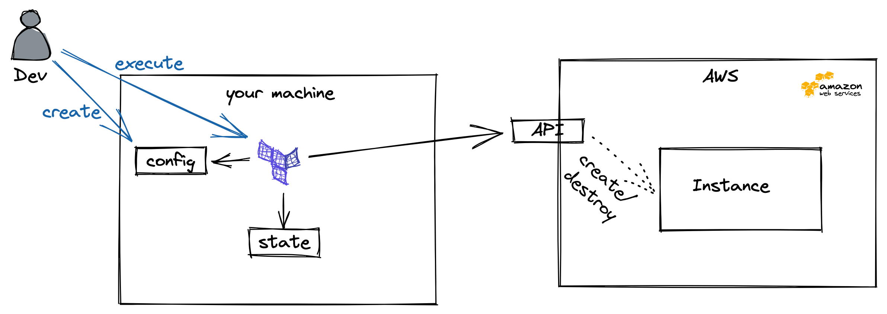

In the future, it will be more comfortable if you're able to use terraform from your PC and IDE.
To install terraform, refer to the respective documentation here
provider.tf in your directoryprovider "aws" {
region = "us-east-1"
}
terraform init
Initializing the backend...
Initializing provider plugins...
- Finding latest version of hashicorp/aws...
- Installing hashicorp/aws v3.61.0...
- Installed hashicorp/aws v3.61.0 (signed by HashiCorp)
Terraform has created a lock file .terraform.lock.hcl to record the provider
selections it made above. Include this file in your version control repository
so that Terraform can guarantee to make the same selections by default when
you run "terraform init" in the future.
Terraform has been successfully initialized!
You may now begin working with Terraform. Try running "terraform plan" to see
any changes that are required for your infrastructure. All Terraform commands
should now work.
If you ever set or change modules or backend configuration for Terraform,
rerun this command to reinitialize your working directory. If you forget, other
commands will detect it and remind you to do so if necessary.
In the second step, we will try to create a virtual instance ...
To do so, we'll create a second file called main.tf. Furthermore, we copy the following configuration in this file:
data "aws_ami" "amazon-linux-2" {
most_recent = true
owners = [ "amazon" ]
filter {
name = "name"
values = ["amzn2-ami-hvm*"]
}
}
resource "aws_instance" "web" {
ami = data.aws_ami.amazon-linux-2.id
instance_type = "t2.micro"
tags = {
Name = "My-First-Terraform-Machine"
}
}
Data Sources are here to get configurations from your cloud provider, but will change nothing and are used for referencing in other objects
Resources are objects you are managing with terraform
terraform plan
terraform apply
Plan: 1 to add, 0 to change, 0 to destroy.
Do you want to perform these actions?
Terraform will perform the actions described above.
Only 'yes' will be accepted to approve.
Enter a value: yes
aws_instance.web: Creating...
aws_instance.web: Still creating... [10s elapsed]
aws_instance.web: Still creating... [20s elapsed]
aws_instance.web: Still creating... [30s elapsed]
aws_instance.web: Still creating... [40s elapsed]
aws_instance.web: Creation complete after 50s [id=i-06c97d9f8aee342a2]
Apply complete! Resources: 1 added, 0 changed, 0 destroyed.
terraform destroy
Plan: 0 to add, 0 to change, 1 to destroy.
Do you really want to destroy all resources?
Terraform will destroy all your managed infrastructure, as shown above.
There is no undo. Only 'yes' will be accepted to confirm.
Enter a value: yes
aws_instance.web: Destroying... [id=i-06c97d9f8aee342a2]
aws_instance.web: Still destroying... [id=i-06c97d9f8aee342a2, 10s elapsed]
aws_instance.web: Still destroying... [id=i-06c97d9f8aee342a2, 20s elapsed]
aws_instance.web: Still destroying... [id=i-06c97d9f8aee342a2, 30s elapsed]
aws_instance.web: Still destroying... [id=i-06c97d9f8aee342a2, 40s elapsed]
aws_instance.web: Destruction complete after 44s
Destroy complete! Resources: 1 destroyed.